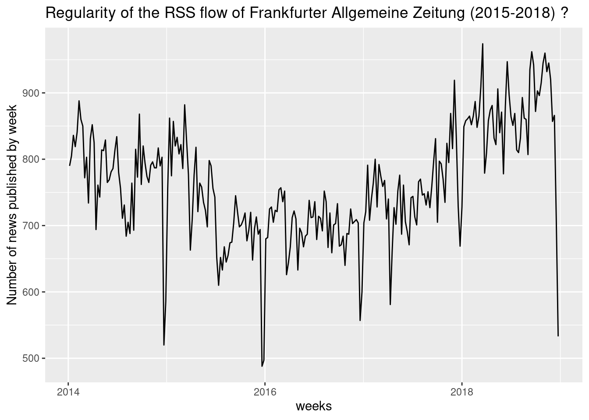
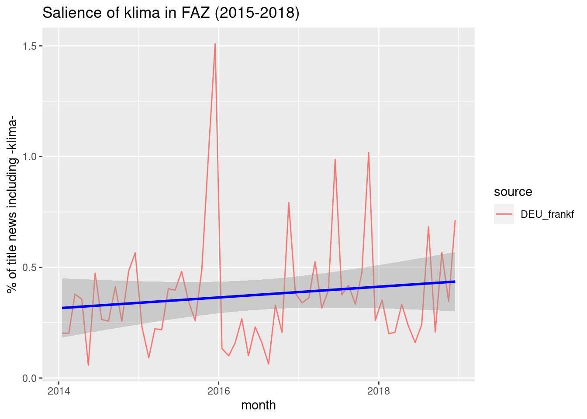

Chapter 5 Examples of corpora
## Package version: 2.0.1## Parallel computing: 2 of 11 threads used.## See https://quanteda.io for tutorials and examples.##
## Attaching package: 'quanteda'## The following object is masked from 'package:utils':
##
## View##
## Attaching package: 'dplyr'## The following objects are masked from 'package:stats':
##
## filter, lag## The following objects are masked from 'package:base':
##
## intersect, setdiff, setequal, unionWe present here a list of corpora previously elaborated for different purposes. Thye ahve been carefully elaborated by their authors for the preparation of publication and/or the preparation of teaching courses and summer schools. All of them are available here and will be use in the fllowing sections.
5.1 Geomedia corpora
The Geomedia corpus is the result of the research project ANR Corpus Geomedia (2013-2016), coordinated by Claude Grasland (Université Paris Diderot) and Marta Severo (Univerté de Nanterre)
The project created a tool for the harvest of RSS flows that realized collection from daily newspapers located in all countries of the world. Contrary to Mediacloud, the Geomedia project did not collected together all the feed of a newspaper but proceed to a selection of specific topics, generally limited to the international/world flow and the general/breaking news flow. But the other flows related to sport, economy, culture, … was generaly ignored. The majority of studies realized during the project focused on the international feeds because they present the advantage to produce theoretically a selection of foreign news of interest for the host country where the media is located (ref.).
5.1.1 The corpus “socant”
The “socant” corpus is a specific extraction from the Geomedia database realized in order to prepare a publication about the Migrant crisi of 2015 in the french journal Socio-Anthropologie. We present here a version of the corpus after several steps of cleaning described in the publication :
## Corpus consisting of 491324 documents, showing 2 documents:
##
## Text Types Tokens Sentences id source date lang
## text1 21 21 1 4155294 AUS_austra 2015-01-01 00:00:37 en
## text2 26 26 1 4155295 AUS_austra 2015-01-01 00:00:37 en
## url
## http://feedproxy.google.com/~r/TheAustralianTheWorld/~3/LiIFByRSTI0/story-e6frg6so-1227171697881
## http://feedproxy.google.com/~r/TheAustralianTheWorld/~3/AtXKdPKuoY4/story-e6frg906-1227171718666
## title
## 35 feared dead in Shanghai NYE stampede
## Amazon chief Bezos loses $US7.4bn## Corpus consisting of 2 documents and 6 docvars.
## text1 :
## "CHINA'S state-run news agency is reporting that 35 people ha..."
##
## text2 :
## "AMAZON.com turned in its worst year on the market since 2008..."The corpus is based on the international RSS feed of 26 newspapers published in 3 languages (French, English, Spanish) and located in 16 countries.
tt<-tidy(qd)
lang<-tt %>%
group_by(lang) %>%
summarise(news=n()) %>%
mutate(pct = 100*news/sum(news))
kable(lang, digit=1)| lang | news | pct |
|---|---|---|
| en | 370260 | 75.4 |
| es | 73198 | 14.9 |
| fr | 47866 | 9.7 |
country<-tt %>%
mutate(country=substr(source,1,3))%>%
group_by(country) %>%
summarise(news=n()) %>%
mutate(pct = 100*news/sum(news))
kable(country, digit=1)| country | news | pct |
|---|---|---|
| ARG | 2247 | 0.5 |
| AUS | 31237 | 6.4 |
| BEL | 13664 | 2.8 |
| BOL | 7871 | 1.6 |
| CAN | 16306 | 3.3 |
| DZA | 9927 | 2.0 |
| ESP | 29539 | 6.0 |
| FRA | 24275 | 4.9 |
| GBR | 120120 | 24.4 |
| IND | 19455 | 4.0 |
| MEX | 33541 | 6.8 |
| MLT | 17696 | 3.6 |
| MYS | 59875 | 12.2 |
| SGP | 72361 | 14.7 |
| USA | 29877 | 6.1 |
| ZWE | 3333 | 0.7 |
Each of the source has produce different number of news through time but appears relatively regular during the period, with the exception of a short period of break of collection in January.
source_week<-tt %>%
mutate(week=cut(as.Date(date), "weeks"))%>%
group_by(source, week)%>%
summarise(news=n()) %>%
mutate(week = as.Date(week))%>%
filter(week > as.Date("2015-01-01"))%>%
filter(week < as.Date("2016-01-01"))
p<-ggplot(source_week, aes(x=week,y=news,color=source))+geom_line()+scale_y_log10()
p
5.2 Media Cloud corpora
5.2.1 The corpus “venise”
The corpus named “venise” has been elaborated during the H2020 ODYCCEUS summer school held in Venice in September 2019. It was the basis of exercises proposed by teachers and researchers from University Paris Diderot (Claude Grasland, ROmain Leconte, Etienne Toureille) to the members of their workshop. As students originated from a great diversity of countries, we decided to collect titles of news from Media Cloud for a five-year period from 1-1-2014 to 31-12-2018. Each student was committed to download a minimum of three newspapers from the same country with various constraints of time continuity but also relevance from media point of view (broadsheet newspapers with different political orientations when possible). The sumer school realized the collection for Germany, Austria, Italy, Spain, France United Kingdom and Netherlands. Some other countries has been further added by Claude Grasland for Belgium, Portugal, Russia and Ireland in order to complete the coverage.
N.B. The data has been rearranged after the summer school in order to adopt the harmonised format proposed in the present newsbook in order to take the recent evolution of quanteda toward version 2.0.
5.2.1.1 list of newspapers
## [1] "mc_de_AUT_dersta.Rdata" "mc_de_AUT_krone.Rdata" "mc_de_AUT_orf.Rdata"
## [4] "mc_de_DEU_diewel.Rdata" "mc_de_DEU_frankf.Rdata" "mc_de_DEU_suddeu.Rdata"
## [7] "mc_en_GBR_dailyt.Rdata" "mc_en_GBR_guardi.Rdata" "mc_en_GBR_indept.Rdata"
## [10] "mc_en_IRL_examin.Rdata" "mc_es_ESP_abc.Rdata" "mc_es_ESP_elmund.Rdata"
## [13] "mc_es_ESP_period.Rdata" "mc_fr_BEL_librbe.Rdata" "mc_fr_FRA_figaro.Rdata"
## [16] "mc_fr_FRA_libera.Rdata" "mc_fr_FRA_lmonde.Rdata" "mc_it_ITA_reppub.Rdata"
## [19] "mc_it_ITA_stampa.Rdata" "mc_nl_BEL_standa.Rdata" "mc_nl_NLD_telegr.Rdata"
## [22] "mc_nl_NLD_trouw.Rdata" "mc_pt_PRT_acoria.Rdata" "mc_pt_PRT_expres.Rdata"
## [25] "mc_pt_PRT_public.Rdata" "mc_ru_RUS_kommer.Rdata" "mc_ru_RUS_nezgaz.Rdata"
## [28] "recode.R"<tbd : provide better metadata …>
5.2.1.2 example : Frankfurter Allgemaine Zeitung (frankf)
We present briefly an example on how to load and use the corpus. Here, we try just to examine the number of news published by the FAZ related to climate questions. More precisely, we research the news including the word klima with prefix or suffix
## Corpus consisting of 198646 documents, showing 2 documents:
##
## Text Types Tokens Sentences id source date lang
## text1 8 8 1 frankf1 DEU_frankf 2014-01-02 14:19:10 de
## text2 8 8 1 frankf2 DEU_frankf 2014-01-12 07:00:00 de## Corpus consisting of 2 documents and 4 docvars.
## text1 :
## "Andrea Henkel: Ein bisschen Wehmut im Wohnzimmer"
##
## text2 :
## "Schlaganfallforschung: Wenn das Herz dem Hirn schadet"We check briefly the regularity of the production of news through time :
x<-tidy(qd)
faz_time <- tidy(qd) %>%
mutate(weeks=cut(as.Date(date), "weeks"))%>%
group_by(weeks)%>%
summarise(newstot=n()) %>%
mutate(weeks = as.Date(weeks)) %>%
filter(weeks > as.Date("2014-01-01")) %>%
filter(weeks < as.Date("2018-12-25"))
p<-ggplot(faz_time, aes(x=weeks,y=newstot))+
geom_line()+
scale_y_continuous("Number of news published by week") +
ggtitle("Regularity of the RSS flow of Frankfurter Allgemeine Zeitung (2015-2018) ?")
p
dico_klima<-dictionary(list (QUAKE = c("*klima*")))
tok<-tokens(qd)
qd$klima_nb<-as.vector(dfm(tok, dictionary=dico_klima))
qd$klima<-qd$klima_nb>0
table(qd$klima_nb)##
## 0 1 2
## 197908 706 32x<-tidy(qd)
klima_time <- tidy(qd) %>%
mutate(month=cut(as.Date(date), "months"))%>%
group_by(source,month)%>%
summarise(newstot=n(),klimatot=sum(klima), klimapct=100*klimatot/newstot) %>%
mutate(month = as.Date(month)+15)
p<-ggplot(klima_time, aes(x=month,y=klimapct,color=source))+
geom_line()+
geom_smooth(method = "lm", color="blue")+
scale_y_continuous("% of title news including -klima-") +
ggtitle("Salience of klima in FAZ (2015-2018)")
p## `geom_smooth()` using formula 'y ~ x'